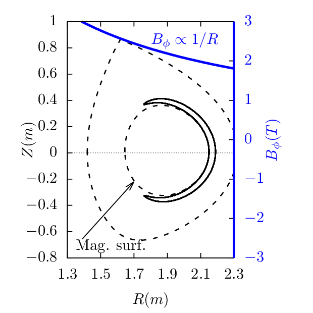

An approximate condition determining whether a particle is trapped or circulating can be obtained by using the conservation of magnetic moment and kinetic energy, and assuming the guiding center orbit is along the magnetic field line (zero-width orbit approximation, which is a proper approximation for low-energy particles whose orbit width is small, as is shown in Fig. 7).

In this approximation, the orbit remains on a magnetic surface. The critical condition for a particle to be trapped or circulating is given by
|
| (80) |
where vI⊥ is the initial perpendicular (to the magnetic Ô¨Åeld) velocity of the particle, BI is the strength of the magnetic Ô¨Åeld at the initial location of the particle, Bmax is the maximum value of the magentic Ô¨Åeld on the same magnetic surface where the particle moves. Equation (80) can be written
 | (81) |
where ùúÉI = arccos(vI⊥‚àïv) is the initial pitch angle of velocity with respect to the local magnetic Ô¨Åeld. It is obvious that particles with sin2ùúÉI > BI∕Bmax can not reach the point of the maximum magnetic Ô¨Åeld of the same magnetic surface and thus they are trapped particles. Otherwise, they are circulating particles. In velocity space (v∥,v⊥), the trapped and circulating region are shown in Fig. 8.
 

Note that the trapped-circulating boundary given in Fig. 8 is determined based on the assumption that the guiding center motion does not deviate from a magnetic surface. However, the actual guiding center orbit does not remain on the same magnetic surface, so the above result can be wrong when applied to some particles. An example is given in Fig. 9, where the numerical results show that the particle is actually trapped but the approximate condition indicate that the particle is circulating.
 

In terms of (w,μ) coordinates, where w is the kinetic energy, the trapped regions and the passing regions of pahse space are shown in Fig. 10.